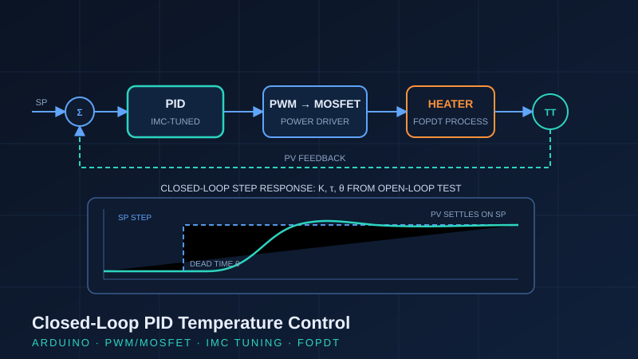

Project Case Study · Jan 2026
Closed-Loop PID Temperature Control — IMC Tuning
A closed-loop temperature controller built from first principles: PWM power delivery through a MOSFET, open-loop step testing to identify the process model, and Internal Model Control tuning to derive PID parameters analytically rather than by trial and error.

The approach: model first, tune second
Most beginner PID projects tune by guessing. This one follows the methodology used in industry: identify the process first, then compute the tuning. An open-loop step test was performed on the heater — step the output, record the temperature response — and the data was fitted to a first-order-plus-dead-time (FOPDT) model, extracting process gain (K), time constant (τ), and dead time (θ).
Power delivery
- PWM-driven MOSFET varies average power to the resistive heater linearly with controller output — effectively a solid-state final control element.
- Temperature feedback closes the loop on the Arduino, which executes the PID algorithm in real time.
IMC tuning methodology
Internal Model Control (IMC) tuning rules convert the measured K, τ, and θ directly into P, I, and D parameters, with a single tuning knob (the closed-loop time constant) that trades off speed against robustness. Compared to Ziegler-Nichols, IMC gives smoother, less oscillatory response and is the method most often recommended for temperature loops, where overshoot is costly and dead time is significant.
Validation & documentation
The tuned loop was validated with closed-loop setpoint steps, confirming the response matched the design intent — controlled rise with minimal overshoot and clean settling. The full tuning exercise — step-test data, model fit, derived parameters, and closed-loop trends — was documented in Excel trend charts, the way loop tuning is recorded and handed over in a real plant.
What this demonstrates
Genuine control theory applied to physical hardware: process identification, analytical tuning, and disciplined documentation. This is the same workflow used to tune loops on real processes — just at bench scale.